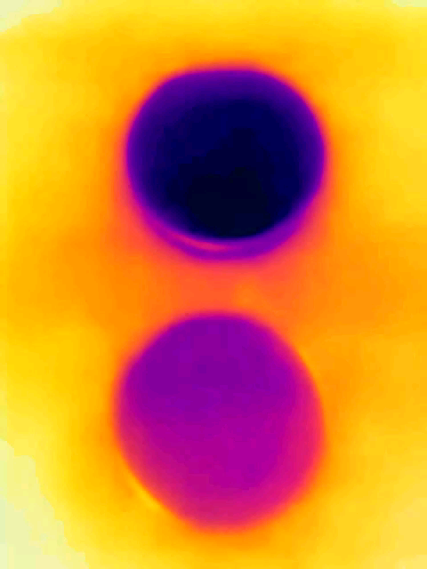

Thermographer: Charles Xie
The existing of salt ions in a solution inhibits evaporation of water, causing the effect of evaporative cooling to be weaker than in pure water.
Tap to download the video.